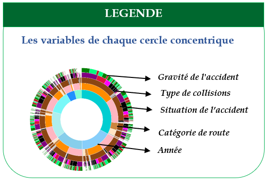

Informations générales
Informations structurées sur les accidents de route en France de 2010 à 2016
Passez la souris sur le graphique pour explorer les informations sur les accidents en France.
?
Références
des accidents
